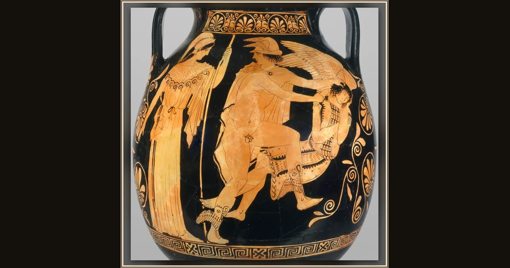

Terracotta pelike (jar)
Attributed to Polygnotos · ca. 450–440 BCE · met
Perseus, in a winged cap and sandals, grasps a winged figure by the hair on this jar; Hesiod places him on Heracles’ shield (215–219) Explore its place in Hesiod's Poems, Shield of Heracles, line 216.